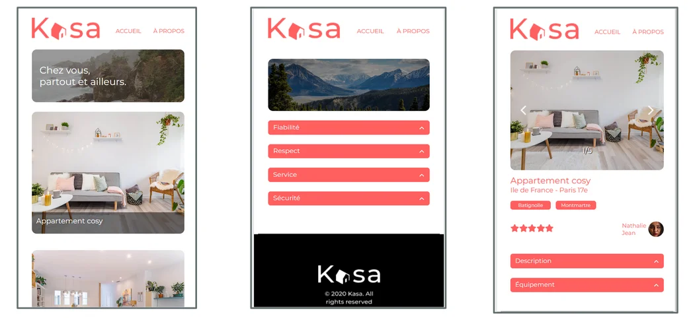

/
/


Retrospective
Chosen projects
Along my training I worked on 12 projects, mainly focused on HTML5, CSS3, Javascript and React.The above slider gives you a quick overview of 5 of them. I you want to go further :
check my gitHub repositories.
Each project combined to one another allowed me to understand topics linked to the langages, frameworks & tools I had to use to create them. Progressively, it gave me an insight of my futur missions as a front-end developper.
Today I feel ready to take on new challenges. I am curious and passionate about coding and you can trust me to be 100% involved in your projects.
Focus on two specific projects
FreeLance Mission
Working for
Nina Carducci
Whose looking for performances & visibility

Visibility, accessibility
& performances
SEO optimization of a one page website
Adaptation of syntaxt according to accessibility standards
Use of Lighthouse & Wave reports
Work on images & conversion into webp
Network visibility & OpenGraph tags
Mission in a web agency
Use of React & Redux
For the website ArgentBank
The ecosystem of React
Use of React & Redux
Elaboration of React components
Gestion of states & props
Use of styled-components